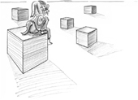
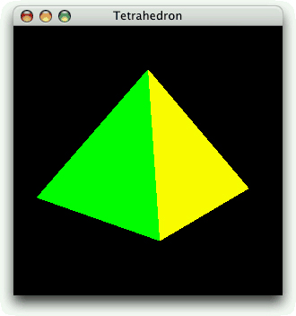

|
|

OpenGL is a standard API for rendering 3D graphics. Qt applications can draw 3D graphics by using the QtOpenGL module, which relies on the system's OpenGL library. The module provides the QGLWidget class, which we can subclass to develop our own widgets that draw themselves using OpenGL commands. For many 3D applications, this is sufficient. The first section of this chapter presents a simple application that uses this technique to draw a tetrahedron and lets the user interact with it using the mouse.
Starting with Qt 4, it is possible to use a QPainter on a QGLWidget as though it were a normal QWidget. One huge benefit of this is that we get the high performance of OpenGL for most drawing operations, such as transformations and pixmap drawing. Another benefit of using QPainter is that we can use its higher-level API for 2D graphics, and combine it with OpenGL calls to perform 3D graphics. In the chapter's second section, we will show how to combine 2D and 3D drawing in the same widget using a mixture of QPainter and OpenGL commands.
Using QGLWidget, we can draw 3D scenes on the screen, using OpenGL as the back-end. To render to a hardware-accelerated off-screen surface, we can use the pbuffer and framebuffer object extensions, which are available through the QGLPixelBuffer and QGLFramebufferObject classes. In the third section of the chapter, we will show how to use a framebuffer object to implement overlays.
This chapter assumes that you are familiar with OpenGL. If OpenGL is new to you, a good place to start learning it is http://www.opengl.org/.
Drawing graphics with OpenGL from a Qt application is straightforward: We must subclass QGLWidget, reimplement a few virtual functions, and link the application against the QtOpenGL and OpenGL libraries. Because QGLWidget is derived from QWidget, most of what we already know still applies. The main difference is that we use standard OpenGL functions to perform the drawing instead of QPainter.
To show how this works, we will review the code of the Tetrahedron application shown in Figure 20.1. The application presents a 3D tetrahedron, or four-sided die, with each face drawn using a different color. The user can rotate the tetrahedron by pressing a mouse button and dragging. The user can set the color of a face by double-clicking it and choosing a color from the QColorDialog that pops up.

class Tetrahedron : public QGLWidget
{
Q_OBJECT
public:
Tetrahedron(QWidget *parent = 0);
protected:
void initializeGL();
void resizeGL(int width, int height);
void paintGL();
void mousePressEvent(QMouseEvent *event);
void mouseMoveEvent(QMouseEvent *event);
void mouseDoubleClickEvent(QMouseEvent *event);
private:
void draw();
int faceAtPosition(const QPoint &pos);
GLfloat rotationX;
GLfloat rotationY;
GLfloat rotationZ;
QColor faceColors[4];
QPoint lastPos;
};
The Tetrahedron class is derived from QGLWidget. The initializeGL(), resizeGL(), and paintGL() functions are reimplemented from QGLWidget. The mouse event handlers are reimplemented from QWidget as usual.
Tetrahedron::Tetrahedron(QWidget *parent)
: QGLWidget(parent)
{
setFormat(QGLFormat(QGL::DoubleBuffer | QGL::DepthBuffer));
rotationX = -21.0;
rotationY = -57.0;
rotationZ = 0.0;
faceColors[0] = Qt::red;
faceColors[1] = Qt::green;
faceColors[2] = Qt::blue;
faceColors[3] = Qt::yellow;
}
In the constructor, we call QGLWidget::setFormat() to specify the OpenGL display context, and we initialize the class's private variables.
void Tetrahedron::initializeGL()
{
qglClearColor(Qt::black);
glShadeModel(GL_FLAT);
glEnable(GL_DEPTH_TEST);
glEnable(GL_CULL_FACE);
}
The initializeGL() function is called just once, before paintGL() is called. This is the place where we can set up the OpenGL rendering context, define display lists, and perform other initializations.
All the code is standard OpenGL, except for the call to QGLWidget's qglClearColor() function. If we wanted to stick to standard OpenGL, we would call glClearColor() in RGBA mode and glClearIndex() in color index mode instead.
void Tetrahedron::resizeGL(int width, int height)
{
glViewport(0, 0, width, height);
glMatrixMode(GL_PROJECTION);
glLoadIdentity();
GLfloat x = GLfloat(width) / height;
glFrustum(-x, +x, -1.0, +1.0, 4.0, 15.0);
glMatrixMode(GL_MODELVIEW);
}
The resizeGL() function is called before paintGL() is called the first time, but after initializeGL() is called. It is also called whenever the widget is resized. This is the place where we can set up the OpenGL viewport, projection, and any other settings that depend on the widget's size.
void Tetrahedron::paintGL()
{
glClear(GL_COLOR_BUFFER_BIT | GL_DEPTH_BUFFER_BIT);
draw();
}
The paintGL() function is called whenever the widget needs to be repainted. This is similar to QWidget::paintEvent(), but instead of QPainter functions we use OpenGL functions. The actual drawing is performed by the private function draw().
void Tetrahedron::draw()
{
static const GLfloat P1[3] = { 0.0, -1.0, +2.0 };
static const GLfloat P2[3] = { +1.73205081, -1.0, -1.0 };
static const GLfloat P3[3] = { -1.73205081, -1.0, -1.0 };
static const GLfloat P4[3] = { 0.0, +2.0, 0.0 };
static const GLfloat * const coords[4][3] = {
{ P1, P2, P3 }, { P1, P3, P4 }, { P1, P4, P2 }, { P2, P4, P3 }
};
glMatrixMode(GL_MODELVIEW);
glLoadIdentity();
glTranslatef(0.0, 0.0, -10.0);
glRotatef(rotationX, 1.0, 0.0, 0.0);
glRotatef(rotationY, 0.0, 1.0, 0.0);
glRotatef(rotationZ, 0.0, 0.0, 1.0);
for (int i = 0; i < 4; ++i) {
glLoadName(i);
glBegin(GL_TRIANGLES);
qglColor(faceColors[i]);
for (int j = 0; j < 3; ++j) {
glVertex3f(coords[i][j][0], coords[i][j][1],
coords[i][j][2]);
}
glEnd();
}
}
In draw(), we draw the tetrahedron, taking into account the x, y, and z rotations and the colors stored in the faceColors array. Everything is standard OpenGL, except for the qglColor() call. We could have used one of the OpenGL functions glColor3d() or glIndex() instead, depending on the mode.
void Tetrahedron::mousePressEvent(QMouseEvent *event)
{
lastPos = event->pos();
}
void Tetrahedron::mouseMoveEvent(QMouseEvent *event)
{
GLfloat dx = GLfloat(event->x() - lastPos.x()) / width();
GLfloat dy = GLfloat(event->y() - lastPos.y()) / height();
if (event->buttons() & Qt::LeftButton) {
rotationX += 180 * dy;
rotationY += 180 * dx;
updateGL();
} else if (event->buttons() & Qt::RightButton) {
rotationX += 180 * dy;
rotationZ += 180 * dx;
updateGL();
}
lastPos = event->pos();
}
The mousePressEvent() and mouseMoveEvent() functions are reimplemented from QWidget to allow the user to rotate the view by clicking and dragging. The left mouse button allows the user to rotate around the x- and y-axes, the right mouse button around the x- and z-axes.
After modifying the rotationX variable, and either the rotationY or the rotationZ variable, we call updateGL() to redraw the scene.
void Tetrahedron::mouseDoubleClickEvent(QMouseEvent *event)
{
int face = faceAtPosition(event->pos());
if (face != -1) {
QColor color = QColorDialog::getColor(faceColors[face], this);
if (color.isValid()) {
faceColors[face] = color;
updateGL();
}
}
}
The mouseDoubleClickEvent() is reimplemented from QWidget to allow the user to set the color of a tetrahedron face by double-clicking it. We call the private function faceAtPosition() to determine which face, if any, is located under the cursor. If a face was double-clicked, we call QColorDialog::getColor() to obtain a new color for that face. Then we update the faceColors array with the new color, and we call updateGL() to redraw the scene.
int Tetrahedron::faceAtPosition(const QPoint &pos)
{
const int MaxSize = 512;
GLuint buffer[MaxSize];
GLint viewport[4];
makeCurrent();
glGetIntegerv(GL_VIEWPORT, viewport);
glSelectBuffer(MaxSize, buffer);
glRenderMode(GL_SELECT);
glInitNames();
glPushName(0);
glMatrixMode(GL_PROJECTION);
glPushMatrix();
glLoadIdentity();
gluPickMatrix(GLdouble(pos.x()), GLdouble(viewport[3] - pos.y()),
5.0, 5.0, viewport);
GLfloat x = GLfloat(width()) / height();
glFrustum(-x, x, -1.0, 1.0, 4.0, 15.0);
draw();
glMatrixMode(GL_PROJECTION);
glPopMatrix();
if (!glRenderMode(GL_RENDER))
return -1;
return buffer[3];
}
The faceAtPosition() function returns the number of the face at a certain position on the widget, or -1 if there is no face at that position. The code for determining this in OpenGL is a bit complicated. Essentially, we render the scene in GL_SELECT mode to take advantage of OpenGL's picking capabilities and then retrieve the face number (its "name") from the OpenGL hit record. The code is all standard OpenGL code, except for the QGLWidget::makeCurrent() call at the beginning, which is necessary to ensure that we use the correct OpenGL context. (QGLWidget does this automatically before it calls initializeGL(), resizeGL(), or paintGL(), so we don't need this call anywhere else in the Tetrahedron implementation.)
Here's the application's main() function:
int main(int argc, char *argv[])
{
QApplication app(argc, argv);
if (!QGLFormat::hasOpenGL()) {
std::cerr << "This system has no OpenGL support" << std::endl;
return 1;
}
Tetrahedron tetrahedron;
tetrahedron.setWindowTitle(QObject::tr("Tetrahedron"));
tetrahedron.resize(300, 300);
tetrahedron.show();
return app.exec();
}
If the user's system doesn't support OpenGL, we print an error message to the console and return immediately.
To link the application against the QtOpenGL module and the system's OpenGL library, the .pro file needs this entry:
QT += opengl
That completes the Tetrahedron application.
|
|
| Converted from CHM to HTML with chm2web Pro 2.85 (unicode) |